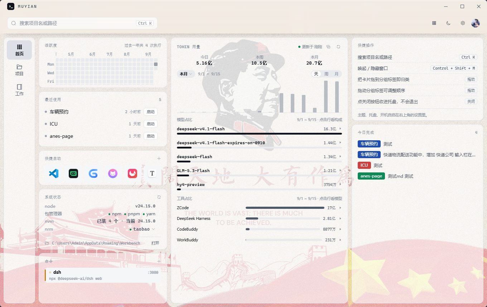
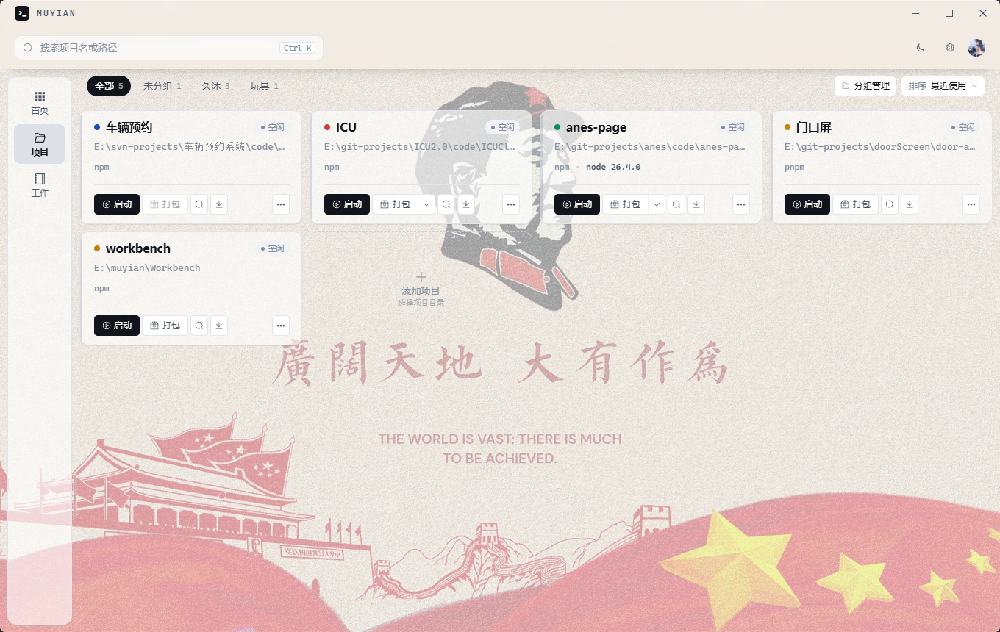
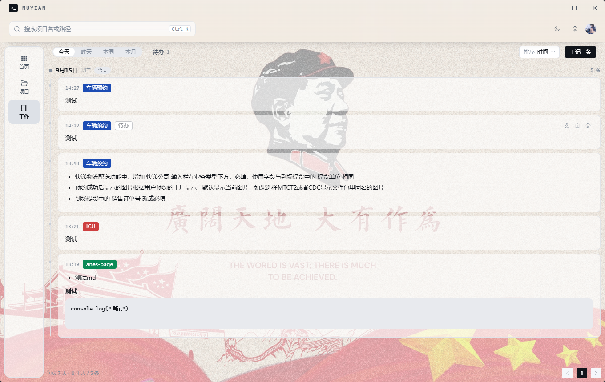
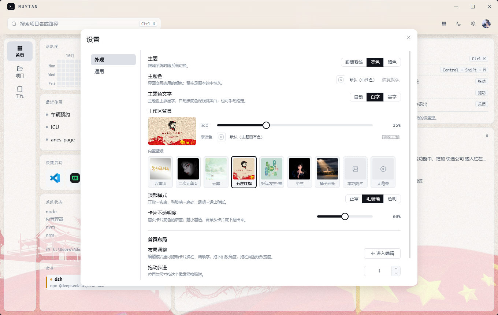

Windows 桌面应用 · Tauri 贰 · Vue 叁 · 数据不出本机
九卡随拖随存，布局自成。顶上皆从本机现取之实话。
择目录即识框架、脚本与包管理器；色标分组，迁移可寻。
装、启、打包、停、重启。端口被占，点名而止之。
一类一签，输出不相扰；收势按进程树，干净利落。
按日系事，可挂项目、可标待办。只留本机，不随同步。
一册文件夹即一部笔记，边写边存；图片可归己库。
版本即 git 历史，随时可复；择一项目，一键安装。
诸家 AI 工具之 token，日周月趋势占比，一目了然。
快捷键、托盘、自启、目录迁移；登录凭据入 Windows 凭据管理器。




应用默认不联网，无一个字节之遥测。对外发请求者凡六事，皆须自启方通。
需 Windows。自源而跑：git clone → npm install → npm run dev；欲得安装包，npm run dist。